[1] -0.8676594[1] -5.116685In statistics, correlation and covariance usually refer to a specific type of association.
Correlation can also refer to the correlation coefficient.
The (Pearson) correlation coefficient \(R\) is a statistic between \(-1\) and 1 that describes the strength and direction of the linear relationship between two variables.
\[R = \frac{1}{n-1}\sum_{i=1}^n\frac{x_i-\overline{x}}{s_x}\frac{y_i-\overline{y}}{s_y}\]
The sign of \(R\) indicates the direction of the relationship. The absolute value of \(R\) indicates the strength.
Assume we have some data:
We want to know the relationship between our covariates and our response, we can do this with a method called regression. Regression provides us with a statistical method to conduct inference and prediction.
How does the speed of a car affect its stopping distance?
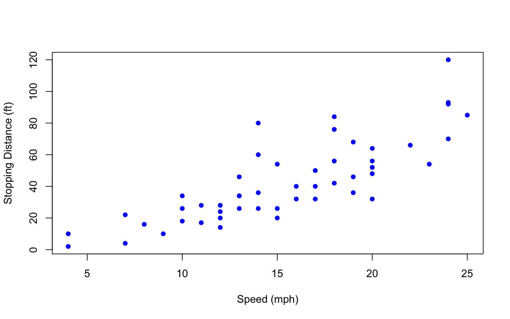Suppose \(x_1,\ldots, x_n\) represent the speed values of each car in our dataset. Let \(Y_1,\ldots, Y_n\) represent the dist variable.
The simple linear regression model is given by \[Y_i=\beta_0+\beta_1x_i+\epsilon_i\] where:
\(\beta_0\) is the intercept parameter
\(\beta_1\) is the slope parameter
\(\epsilon_i\) represents iid \(N(0,\sigma^2)\) errors, where \(\sigma^2\) is the variance of \(\epsilon_i\).
Under this model, we can also write that \[Y_i\mid X_i= x_i\sim N(\beta_0+\beta_1x_i, \sigma^2)\] As a result \[E(Y_i\mid X_i= x_i)= \beta_0+\beta_1x_i\] \[\mathrm{Var}(Y_i\mid X_i= x_i)= \sigma^2\]
Typically, we say there are four assumptions for simple linear regression:
Note that even if one or more of these assumptions breaks, linear regression can still be useful if used with caution.
Typically, we start with data \(Y_1,\ldots, Y_n\) and \(x_1,\ldots, x_n\). How do we estimate \(\beta_0\) and \(\beta_1\)?
In other words, what is the best line to use for modeling the relationship between \(X\) and \(Y\)?
Usually, we use the least squares line, which is the solution to the following optimization problem: \[\arg\min\sum_{i=1}^n (y_i-(\beta_0+\beta_1x_i))^2=\arg\min\sum_{i=1}^n (y_i-\widehat{y}_i)^2\] where \(\widehat{y}_i\) is the model prediction for \(y_i\).
lm functionlm functionFor the simple linear regression model, typically we wish to carry out inference on \(\beta_1\). One way to do so is via a hypothesis test:
\(H_0:\beta_1=0\) \(H_a:\beta_1\not=0\)
Call:
lm(formula = dist ~ speed, data = cars)
Residuals:
Min 1Q Median 3Q Max
-29.069 -9.525 -2.272 9.215 43.201
Coefficients:
Estimate Std. Error t value Pr(>|t|)
(Intercept) -17.5791 6.7584 -2.601 0.0123 *
speed 3.9324 0.4155 9.464 1.49e-12 ***
---
Signif. codes: 0 '***' 0.001 '**' 0.01 '*' 0.05 '.' 0.1 ' ' 1
Residual standard error: 15.38 on 48 degrees of freedom
Multiple R-squared: 0.6511, Adjusted R-squared: 0.6438
F-statistic: 89.57 on 1 and 48 DF, p-value: 1.49e-12We can also construct a confidence interval for \(\beta_1\) if our focus isn’t on developing evidence against any null hypothesis:
Prediction generally involves estimating the value of new data \(Y_{n+1}\) given \(X_{n+1}\). We can use the predict() function with our lm() results:
Note that the predict() function can also be used to generate “confidence” intervals:
interval = "prediction": Construct a confidence interval for \(Y_{n+1}|X_{n+1}=x_{n+1}\), the value of a new observation for which \(X_{n+1}=x_{n+1}\)interval = "confidence": Construct a confidence interval for \(E(Y_{n+1}|X_{n+1}=x_{n+1})\), the value of the conditional mean when \(X_{n+1}=x_{n+1}\)What is the method of least squares and how does it relate to linear regression?
Classify the following questions as inference or prediction:
Typically, we say there are four assumptions for simple linear regression:
Linear
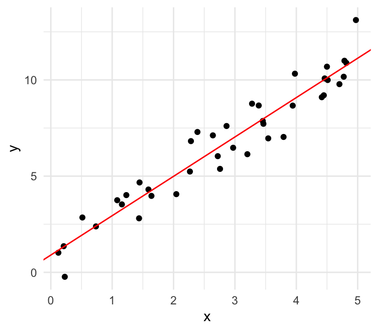
Nonlinear

We can also plot the residuals against our independent variable, where we define the residual as follows: \[\widehat{\epsilon}_i = \mathrm{Residual} = \mathrm{Observed} - \mathrm{Predicted}=y -\widehat{y}\]
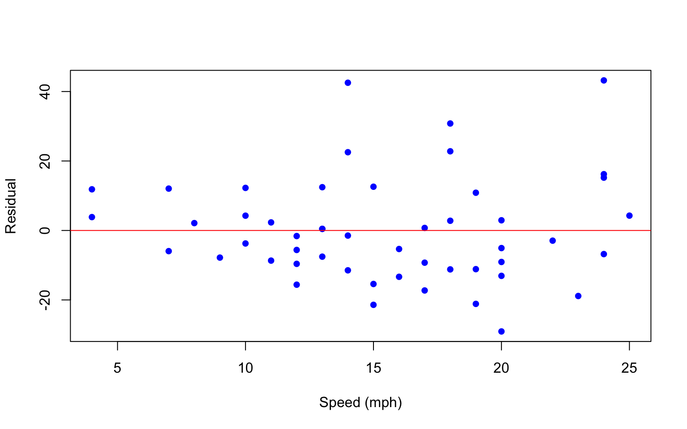Linear
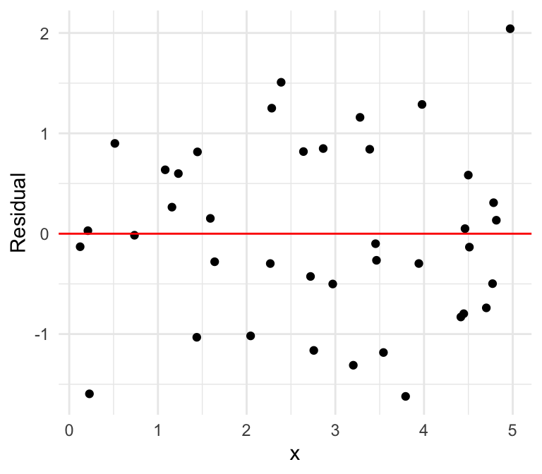
Nonlinear
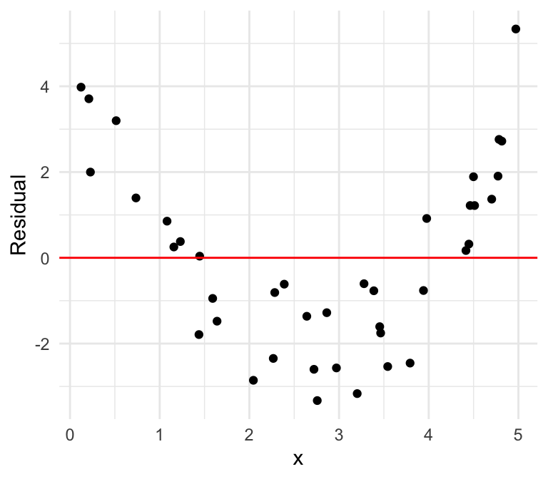
Checking independence is typically more difficult. We require that conditional on the dependent variables \(x_1,\ldots, x_n\), the response variables \(Y_1,\ldots, Y_n\) are independent.
Example of independence: survey data obtained via simple random sampling
Example of dependence: height and weight measurements of penguins, where each penguin is measured twice
Can you spot the difference?
Normal errors
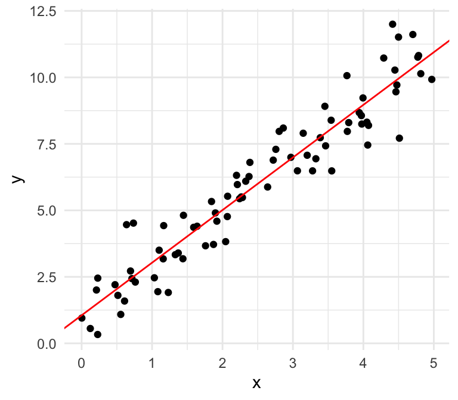
Non-normal errors
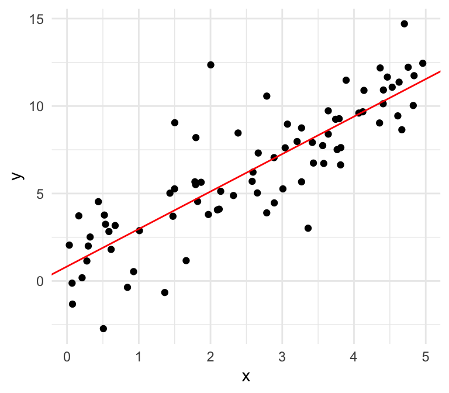
We can use a quantile-quantile plot to see whether our estimated residuals are approximately normally distributed.
What do you notice?
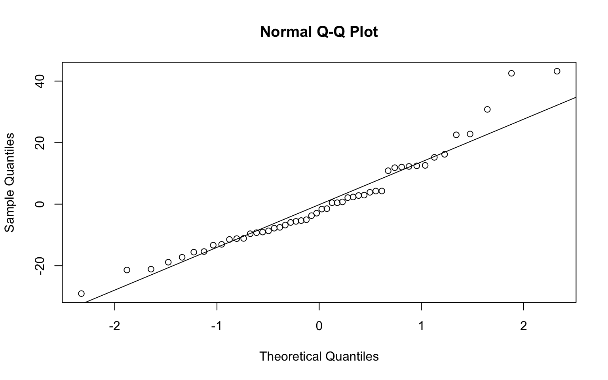Normal errors
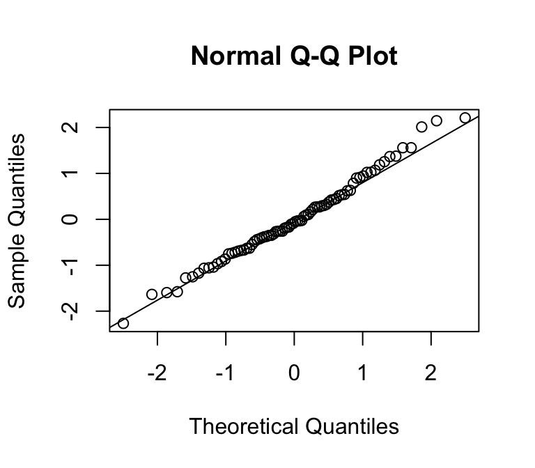
Non-normal errors
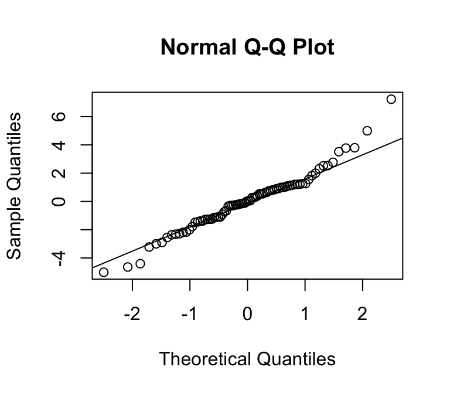
Can you spot the difference?
Equal variances

Unequal variances
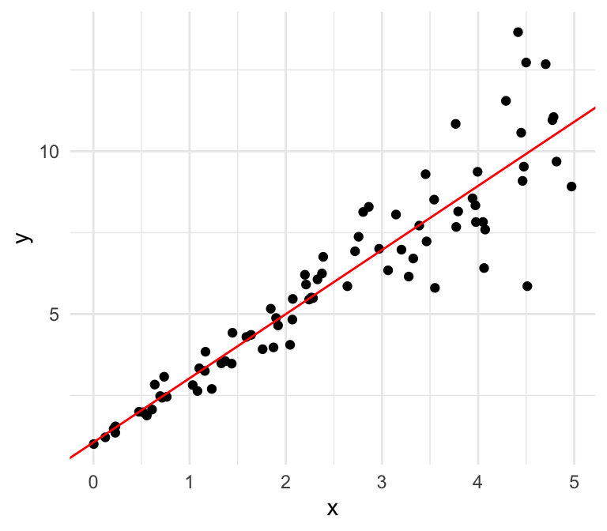
Can you spot the difference using the residual plot?
Equal variances
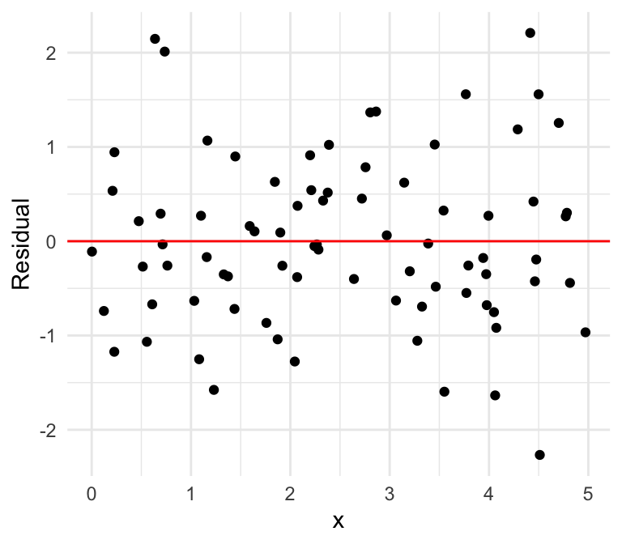
Unequal variances
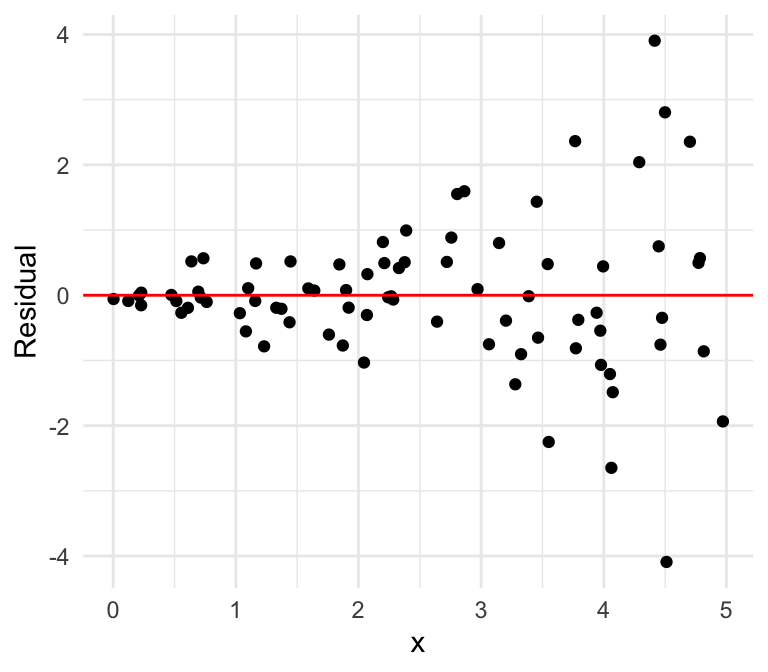
What if we have multiple input variables?
mpg cyl disp hp drat wt qsec vs am gear carb
Mazda RX4 21.0 6 160 110 3.90 2.620 16.46 0 1 4 4
Mazda RX4 Wag 21.0 6 160 110 3.90 2.875 17.02 0 1 4 4
Datsun 710 22.8 4 108 93 3.85 2.320 18.61 1 1 4 1
Hornet 4 Drive 21.4 6 258 110 3.08 3.215 19.44 1 0 3 1
Hornet Sportabout 18.7 8 360 175 3.15 3.440 17.02 0 0 3 2
Valiant 18.1 6 225 105 2.76 3.460 20.22 1 0 3 1Given our response \(Y\) and our predictors \(X_1, \ldots, X_p\), a linear regression model takes the form:
\[ \begin{align} Y &= \beta_0 + \beta_1 X_1 + \cdots + \beta_p X_p + \epsilon,\\ \epsilon &\sim N(0,\sigma^2) \end{align} \]
Note: If we wish to include a categorical covariate, we can add indicator variables for each category.
\[ \begin{align} Y &= \beta_0 + \beta_1 X_1 + \cdots + \beta_p X_p + \epsilon,\\ \epsilon &\sim N(0,\sigma^2) \end{align} \]
Consider the following example using the penguins data.
# A tibble: 6 × 8
species island bill_length_mm bill_depth_mm flipper_length_mm body_mass_g
<fct> <fct> <dbl> <dbl> <int> <int>
1 Adelie Torgersen 39.1 18.7 181 3750
2 Adelie Torgersen 39.5 17.4 186 3800
3 Adelie Torgersen 40.3 18 195 3250
4 Adelie Torgersen NA NA NA NA
5 Adelie Torgersen 36.7 19.3 193 3450
6 Adelie Torgersen 39.3 20.6 190 3650
# ℹ 2 more variables: sex <fct>, year <int>Suppose we are interested in predicting body_mass_g using flipper_length_mm.
Call:
lm(formula = body_mass_g ~ flipper_length_mm, data = penguins)
Residuals:
Min 1Q Median 3Q Max
-1058.80 -259.27 -26.88 247.33 1288.69
Coefficients:
Estimate Std. Error t value Pr(>|t|)
(Intercept) -5780.831 305.815 -18.90 <2e-16 ***
flipper_length_mm 49.686 1.518 32.72 <2e-16 ***
---
Signif. codes: 0 '***' 0.001 '**' 0.01 '*' 0.05 '.' 0.1 ' ' 1
Residual standard error: 394.3 on 340 degrees of freedom
(2 observations deleted due to missingness)
Multiple R-squared: 0.759, Adjusted R-squared: 0.7583
F-statistic: 1071 on 1 and 340 DF, p-value: < 2.2e-16Consider the following residual plot, where we define the residual as follows: \[\mathrm{Residual} = \mathrm{Observed} - \mathrm{Predicted}=y -\widehat{y}\]
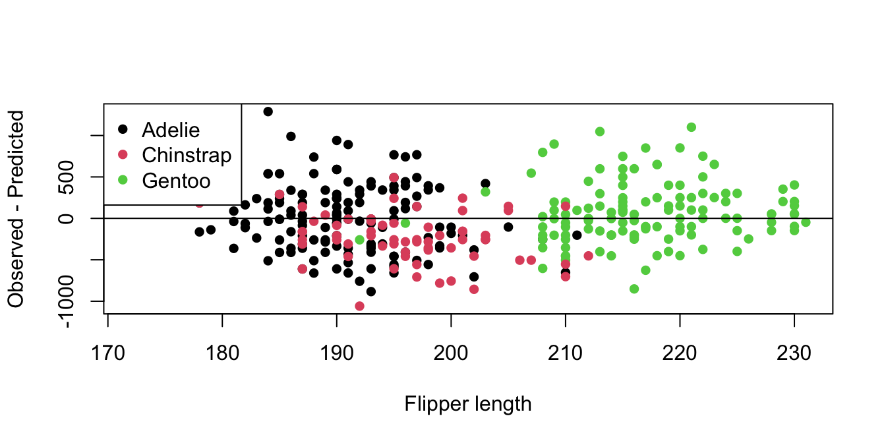What if I also want to include species in the model? There are a few ways to do so.
The first way is to add species into the formula for our linear regression model:
lm_species_res <- lm(body_mass_g ~ flipper_length_mm + species,
data = penguins)
summary(lm_species_res)
Call:
lm(formula = body_mass_g ~ flipper_length_mm + species, data = penguins)
Residuals:
Min 1Q Median 3Q Max
-927.70 -254.82 -23.92 241.16 1191.68
Coefficients:
Estimate Std. Error t value Pr(>|t|)
(Intercept) -4031.477 584.151 -6.901 2.55e-11 ***
flipper_length_mm 40.705 3.071 13.255 < 2e-16 ***
speciesChinstrap -206.510 57.731 -3.577 0.000398 ***
speciesGentoo 266.810 95.264 2.801 0.005392 **
---
Signif. codes: 0 '***' 0.001 '**' 0.01 '*' 0.05 '.' 0.1 ' ' 1
Residual standard error: 375.5 on 338 degrees of freedom
(2 observations deleted due to missingness)
Multiple R-squared: 0.7826, Adjusted R-squared: 0.7807
F-statistic: 405.7 on 3 and 338 DF, p-value: < 2.2e-16In this case, the model is as follows: \[Y=\beta_0+\beta_1x_1+\beta_2x_2+\beta_3x_3+\epsilon_i\] where:
body_mass_gflipper_length_mmWhat happened to the Adelie penguins?
When including a categorical variable in a linear regression model, R automatically treats one category as the reference group.
The value of the intercept \(\beta_0\) thus represents the expected value of \(Y\) when \(x_1\) is zero for an Adelie penguin.
How do we interpret the other \(\beta\) parameters?
This model thus yields three parallel lines, one for each group.
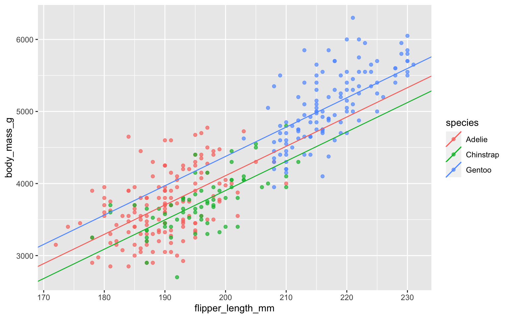Now we obtain the following residual plot:
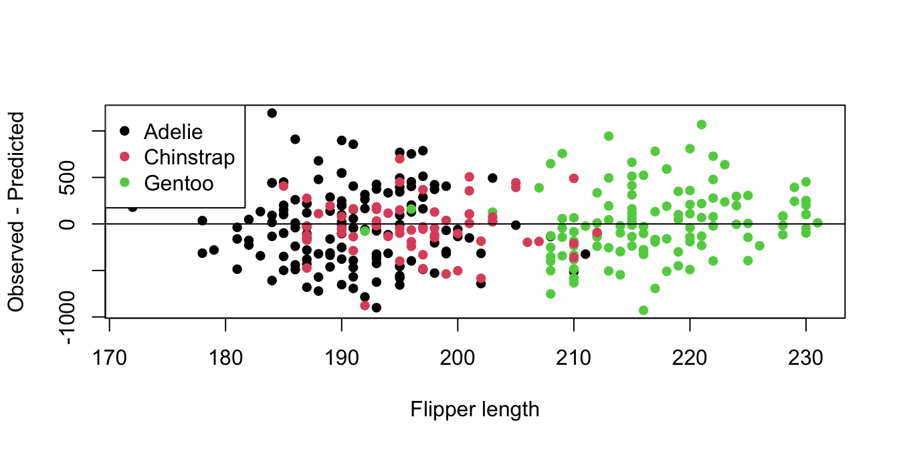The previous model gave us group-specific intercepts, resulting in parallel lines. What if we want to let the slope vary across each species?
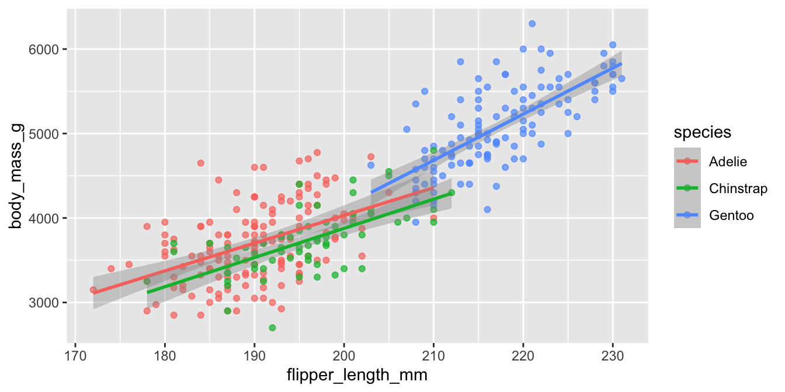The standard approach is to introduce interaction terms:
Call:
lm(formula = body_mass_g ~ flipper_length_mm * species, data = penguins)
Residuals:
Min 1Q Median 3Q Max
-911.18 -251.93 -31.77 197.82 1144.81
Coefficients:
Estimate Std. Error t value Pr(>|t|)
(Intercept) -2535.837 879.468 -2.883 0.00419 **
flipper_length_mm 32.832 4.627 7.095 7.69e-12 ***
speciesChinstrap -501.359 1523.459 -0.329 0.74229
speciesGentoo -4251.444 1427.332 -2.979 0.00311 **
flipper_length_mm:speciesChinstrap 1.742 7.856 0.222 0.82467
flipper_length_mm:speciesGentoo 21.791 6.941 3.139 0.00184 **
---
Signif. codes: 0 '***' 0.001 '**' 0.01 '*' 0.05 '.' 0.1 ' ' 1
Residual standard error: 370.6 on 336 degrees of freedom
(2 observations deleted due to missingness)
Multiple R-squared: 0.7896, Adjusted R-squared: 0.7864
F-statistic: 252.2 on 5 and 336 DF, p-value: < 2.2e-16The standard approach is to introduce interaction terms:
\[Y=\beta_0+\beta_1x_1+\beta_2x_2+\beta_3x_3+\beta_4(x_1 * x_2) + \beta_5(x_1*x_3)+\epsilon_i\] where:
We can fully write out a linear regression model
\[ \begin{equation} \begin{bmatrix} y_1 \\ y_2\\ \vdots \\ y_n \end{bmatrix} = \begin{bmatrix} 1 & x_{1,1} & \cdots & x_{1,k}\\ 1 & x_{2,1} & \cdots & x_{2, k}\\ \vdots & \vdots & \ddots & \vdots \\ 1 & x_{n,1} & \cdots & x_{n, k}\end{bmatrix} \begin{bmatrix} \beta_0 \\ \beta_1 \\ \vdots \\ \beta_{k} \end{bmatrix} + \begin{bmatrix} \epsilon_1 \\ \epsilon_2 \\ \vdots \\ \epsilon_{n} \end{bmatrix} \end{equation} \]
This can also be expressed in matrix form:
\[ \begin{align} \mathbf{Y} &= \mathbf{X}\beta + \epsilon,\\ \epsilon &\sim N(0,1) \end{align} \]
\(\epsilon\), pronounced epsilon, represents the error term of our model. We can model \(Y\) as a linear function of the \(X\)’s, but in the real world, the relationship won’t always be perfect. There is noise! It can come from
In linear regression, we assume that this error term is normally distributed with mean zero and variance \(\sigma^2\).
\(\beta_0\) is the intercept term of our model. Notice that
\[\mathbb{E}[Y|X_1 = X_2 = \cdots = X_p = 0] = \beta_0\]
Thus, \(\beta_0\) is the expected value of our response if all the covariates are equal to \(0\). This is also known as the y-intercept of our model.
\(X_j\) represents the \(j\)th independent variable in our model. Notice that \[\mathbb{E}[Y|X_1,\ldots, X_p] = \beta_0 + \beta_1 X_1 + \cdots + \beta_p X_p\] What happens to this expectation if we increase \(X_j\) by 1 unit, holding everything else constant?
The conditional expectation of \(Y\) increases by \(\beta_j\).
\(\beta_j\) represents the \(j\)th regression coefficient in our model. From the previous slide, we saw that for every 1 unit increase in \(X_j\), holding all other variables constant, the expected value of the response increases by \(\beta_j\). From this we can derive an interpretation.
Interpretation of \(\beta_j\): the expected difference in the response between two observations differing by one unit in \(X_j\), with all other covariates identical.
lm(): Linear ModelWe fit a linear regression model in R using lm(). The first argument is a formula, which is a type of R object. Formulas typically take the following form: Y ~ X_1 + X_2 + ... + X_p.
The dependent variable, Y goes on the left-hand side of the tilde ~, which marks the formula. The independent variables are added on the right-hand side. Using this formula will give us a model in the form of
\[ \begin{align} Y &= \beta_0 + \beta_1 X_1 + \cdots + \beta_p X_p + \epsilon,\\ \epsilon &\sim N(0,\sigma^2) \end{align} \]
lm(): Linear Modellm(): Linear ModelWe can see from names() that lm objects contain a lot more than they print out by default.
summary() Model summariessummary() or summary.lm() gives us a summary of our lm object in R.
summary() Model summaries
Call:
lm(formula = mpg ~ hp + wt, data = mtcars)
Residuals:
Min 1Q Median 3Q Max
-3.941 -1.600 -0.182 1.050 5.854
Coefficients:
Estimate Std. Error t value Pr(>|t|)
(Intercept) 37.22727 1.59879 23.285 < 2e-16 ***
hp -0.03177 0.00903 -3.519 0.00145 **
wt -3.87783 0.63273 -6.129 1.12e-06 ***
---
Signif. codes: 0 '***' 0.001 '**' 0.01 '*' 0.05 '.' 0.1 ' ' 1
Residual standard error: 2.593 on 29 degrees of freedom
Multiple R-squared: 0.8268, Adjusted R-squared: 0.8148
F-statistic: 69.21 on 2 and 29 DF, p-value: 9.109e-12plot(): Regression model diagnosticsCalling plot(my_lm) will return several diagnostic plots. Remember that we want our error term to look normally distributed with mean zero. We won’t go into all the details for this class, but here are some tips:
plot(): Regression model diagnosticsplot(): Regression model diagnosticsplot(): Regression model diagnosticsplot(): Regression model diagnosticsplot(): Regression model diagnosticscoef(): Extract coefficientsUse coef() to extract estimated coefficients as a vector.
fitted() Extract fitted valuesUse fitted() to extract the fitted/estimated values for the response. This can be useful to compare how our fitted values compare to the estimated values to help assess model fit.
library(ggplot2)
mod_fits <- fitted(my_lm)
my_df <- data.frame(actual = mtcars$mpg, fitted = mod_fits)
ggplot(my_df, aes(x = fitted, y = actual)) +
geom_point() +
geom_abline(slope = 1, intercept = 0, col = "red", lty = 2) +
theme_bw(base_size = 15) +
labs(x = "Fitted values", y = "Actual values", title = "Actual vs. Fitted") +
theme(plot.title = element_text(hjust = 0.5))fitted() Extract fitted valuespredict(): Predict new outcomesUse predict() to predict new outcomes given new explanatory variables. For example, pretend we observe two new cars with horsepowers of 100 and 150, respectively, and weights of 3000 and 3500, respectively.
# Note: wt is in 1000s of lbs
new_obs <- data.frame(hp = c(100, 150), wt = c(3, 3.5))
predict(my_lm, new_obs) 1 2
22.41648 18.88892 We’ll come back to prediction in future lectures.
residuals(): Compute residualsUse residuals() to compute the residuals for fitted values.
Mazda RX4 Mazda RX4 Wag Datsun 710 Hornet 4 Drive
-2.57232940 -1.58348256 -2.47581872 0.13497989
Hornet Sportabout Valiant Duster 360 Merc 240D
0.37273336 -2.37381631 -1.29904236 1.51293266
Merc 230 Merc 280 Merc 280C Merc 450SE
0.80632669 -0.77945988 -2.17945988 0.67463146
Merc 450SL Merc 450SLC Cadillac Fleetwood Lincoln Continental
0.25616901 -1.64993945 0.04479541 1.03726743
Chrysler Imperial Fiat 128 Honda Civic Toyota Corolla
5.50751301 5.80097202 1.08761978 5.85379085
Toyota Corona Dodge Challenger AMC Javelin Camaro Z28
-3.08644148 -3.31136386 -3.94097947 -1.25202805
Pontiac Firebird Fiat X1-9 Porsche 914-2 Lotus Europa
2.44325481 -0.32665313 -0.03737415 2.63023081
Ford Pantera L Ferrari Dino Maserati Bora Volvo 142E
-0.74648866 -1.22541324 2.26052287 -1.58364943 Working with formulas in R can be somewhat confusing, so it is important to understand how formulas work to make sure you are fitting the intended model.
- 1Use - 1 to remove an intercept from your model. Only do this if you are very sure that what you are doing is appropriate. I don’t recommend doing this in practice.
Call:
lm(formula = mpg ~ hp + wt - 1, data = mtcars)
Residuals:
Min 1Q Median 3Q Max
-19.407 -2.382 2.511 7.091 23.885
Coefficients:
Estimate Std. Error t value Pr(>|t|)
hp -0.03394 0.03940 -0.861 0.3959
wt 6.84045 1.89425 3.611 0.0011 **
---
Signif. codes: 0 '***' 0.001 '**' 0.01 '*' 0.05 '.' 0.1 ' ' 1
Residual standard error: 11.32 on 30 degrees of freedom
Multiple R-squared: 0.7264, Adjusted R-squared: 0.7082
F-statistic: 39.83 on 2 and 30 DF, p-value: 3.599e-09: operatorUse X1:X2 to include an interaction effect in your model. This is useful if you have reason to believe two covariates interact, such as gender and education in a wage model. In our case, we’ll assume horsepower and weight interact in their effect on mpg.
Typically (always?), if you include an interaction effect, you should also include the marginal effects. You can do this automatically using X1*X2.
: operator
Call:
lm(formula = mpg ~ hp:wt, data = mtcars)
Residuals:
Min 1Q Median 3Q Max
-4.8831 -2.0952 -0.4577 1.2262 7.9282
Coefficients:
Estimate Std. Error t value Pr(>|t|)
(Intercept) 27.745642 1.062236 26.12 < 2e-16 ***
hp:wt -0.014872 0.001727 -8.61 1.32e-09 ***
---
Signif. codes: 0 '***' 0.001 '**' 0.01 '*' 0.05 '.' 0.1 ' ' 1
Residual standard error: 3.288 on 30 degrees of freedom
Multiple R-squared: 0.7119, Adjusted R-squared: 0.7023
F-statistic: 74.14 on 1 and 30 DF, p-value: 1.321e-09* operator
Call:
lm(formula = mpg ~ hp * wt, data = mtcars)
Residuals:
Min 1Q Median 3Q Max
-3.0632 -1.6491 -0.7362 1.4211 4.5513
Coefficients:
Estimate Std. Error t value Pr(>|t|)
(Intercept) 49.80842 3.60516 13.816 5.01e-14 ***
hp -0.12010 0.02470 -4.863 4.04e-05 ***
wt -8.21662 1.26971 -6.471 5.20e-07 ***
hp:wt 0.02785 0.00742 3.753 0.000811 ***
---
Signif. codes: 0 '***' 0.001 '**' 0.01 '*' 0.05 '.' 0.1 ' ' 1
Residual standard error: 2.153 on 28 degrees of freedom
Multiple R-squared: 0.8848, Adjusted R-squared: 0.8724
F-statistic: 71.66 on 3 and 28 DF, p-value: 2.981e-13. operatorUse ~ . to include all non-response variables in the input data as independent variables.
Call:
lm(formula = mpg ~ ., data = mtcars)
Residuals:
Min 1Q Median 3Q Max
-3.4506 -1.6044 -0.1196 1.2193 4.6271
Coefficients:
Estimate Std. Error t value Pr(>|t|)
(Intercept) 12.30337 18.71788 0.657 0.5181
cyl -0.11144 1.04502 -0.107 0.9161
disp 0.01334 0.01786 0.747 0.4635
hp -0.02148 0.02177 -0.987 0.3350
drat 0.78711 1.63537 0.481 0.6353
wt -3.71530 1.89441 -1.961 0.0633 .
qsec 0.82104 0.73084 1.123 0.2739
vs 0.31776 2.10451 0.151 0.8814
am 2.52023 2.05665 1.225 0.2340
gear 0.65541 1.49326 0.439 0.6652
carb -0.19942 0.82875 -0.241 0.8122
---
Signif. codes: 0 '***' 0.001 '**' 0.01 '*' 0.05 '.' 0.1 ' ' 1
Residual standard error: 2.65 on 21 degrees of freedom
Multiple R-squared: 0.869, Adjusted R-squared: 0.8066
F-statistic: 13.93 on 10 and 21 DF, p-value: 3.793e-07How do we choose/estimate \(\beta_{(k+1)\times1}\)?
Least squares finds the line that minimizes the squared distance between the points and the line, i.e. makes \[\left[y_i - (\beta_0 + \beta_1 x_{i, 1} + \dots + \beta_k x_{i,k})\right]^2\] as small as possible for all \(i = 1, \dots, n\).
The vector \(\widehat{\beta}\) that minimizes the sum of the squared distances is ()
\[ \widehat{\beta}=\left(\mathbf{X}^T \mathbf{X} \right)^{-1}\mathbf{X}^T \mathbf{Y}.\]
Note: In statistics, once we have estimated a parameter we put a “hat” on it, e.g. \(\widehat{\beta_0}\) is the estimate of the true parameter \(\beta_0\).
Regression methods focus on modeling the relationship between response \(Y\) and explanatory variables \(X_1,\ldots, X_p\).
Linear regression proposes a model of the form \[Y=\beta_0+\beta_1X_1+\cdots +\beta_p X_p+\epsilon; \hspace{1em} \epsilon\sim N(0, \sigma^2)\] Sometimes, the following weaker form is used (why is this weaker?) \[E(Y\mid X_1,\ldots, X_p)=\beta_0+\beta_1X_1+\cdots +\beta_p X_p\] In other words, the expected value of \(Y\) (given \(X_1,\ldots, X_p\)) is a linear transformation of \(X_1,\ldots, X_p\).
Note that linear regression can often be generalized to encompass other models. Consider the following model: \[Y=\beta_0+\beta_1X_1 +\beta_2X_1^2\] This is an example of polynomial regression, but the methods for fitting this model are essentially the same as ordinary least squares, using \(X_1^2\) as an extra covariate.
Many alternative models can be written in this form by transforming the covariates or transforming the response \(Y\).
Inference: Asymptotically valid confidence intervals and hypothesis tests for \(\beta_0\) and \(\beta_1\).
Call:
lm(formula = y ~ x)
Residuals:
Min 1Q Median 3Q Max
-1.5577 -0.6187 -0.0789 0.6198 3.1659
Coefficients:
Estimate Std. Error t value Pr(>|t|)
(Intercept) 0.8980 0.3527 2.546 0.0151 *
x 2.0373 0.1170 17.420 <2e-16 ***
---
Signif. codes: 0 '***' 0.001 '**' 0.01 '*' 0.05 '.' 0.1 ' ' 1
Residual standard error: 1.066 on 38 degrees of freedom
Multiple R-squared: 0.8887, Adjusted R-squared: 0.8858
F-statistic: 303.4 on 1 and 38 DF, p-value: < 2.2e-16What if \(E(Y_i\mid X_i= x_i)\not= \beta_0+\beta_1x_i\)?
Our standard inference and prediction strategies no longer work in general.
Inference: Confidence intervals and hypothesis tests for \(\beta_0\) and \(\beta_1\) are no longer valid.
Prediction: Point predictions are no longer unbiased and prediction intervals are no longer valid.
What if our predictor variables are closely related? Consider the following simulation:
What if our predictor variables are closely related? Consider the following simulation:
Call:
lm(formula = y ~ x1 + x2b)
Coefficients:
(Intercept) x1 x2b
0.8372 -35.8202 19.2636